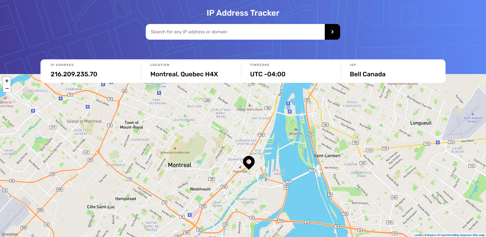

-

Shopping List App
https://wayloncn-shopping-list-app.vercel.app/shopping-listAn application to facilitate the creation of a shopping list. It provides a printable shopping list categorized by department to make shopping more efficient and minimize movement through the store. The first application I built from the ground up using Angular.
Technologies Used
- Angular
- Typescript
- HTML
- CSS
- Sass CSS Preprocessor
Concepts Explored
- Styling for print with CSS
- Cross-component communication with Angular
- Angular Services
-

Animated Side Navbar
https://wayloncn-animated-side-nav-responsive.vercel.appAn animated side navigation bar. I hadn't worked with CSS transitions yet, and a Fireship video on youtube inspired me to give it a try. It was also the first time I'd worked with responsive SVGs.
Technologies Used
- HTML
- CSS
- Sass CSS Preprocessor
- SVG
Concepts Explored
- CSS Transforms
- Responsive SVGs
-

Social Media Dashboard
https://wayloncn-social-media-dashboard.vercel.appA social media dashboard layout featuring a theme switcher. This was a challenge provided by Frontend Mentor.
Technologies Used
- HTML
- CSS
- Typescript
- NPM
Concepts Explored
- Custom Toggle Control
- Theme Switching
-

Manage Landing Page
https://wayloncn-manage-landing-page.vercel.app/A landing page for the 'Manage' company. This is a challenge provided by Frontend Mentor made specifically to test responsive skills. The testimonial spinner was a nice challenge and gave me the oppurtunity to work with the CSS 'perspective' property.
Technologies Used
- HTML
- CSS
- Sass CSS Preprocessor
- Typescript
- NPM
Concepts Explored
- Responsive layout
- Typography
- CSS perspective property
-

IP Tracker App
https://wayloncn-ip-tracker.vercel.app/An IP address tracking application that displays a location of a given IP address. This is a challenge provided by Frontend Mentor. The leaflet javascript library was used for the map component, the Mapbox API was used for map tiles, and the Ipify API was used for IP-based geolocation. The application was built using the Angular framework.
Technologies Used
- Angular
- Typescript
- HTML
- CSS
- Sass CSS Preprocessor
- Leaflet Javascript Library
- Mapbox API
- Ipify API
Concepts Explored
- HTTP requests to API and handling responses with Angular
- Using 3rd party javascript library with Angular